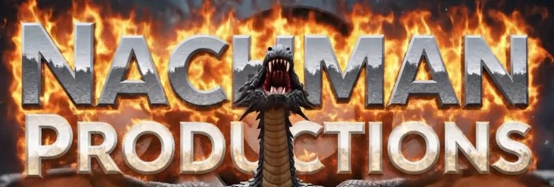
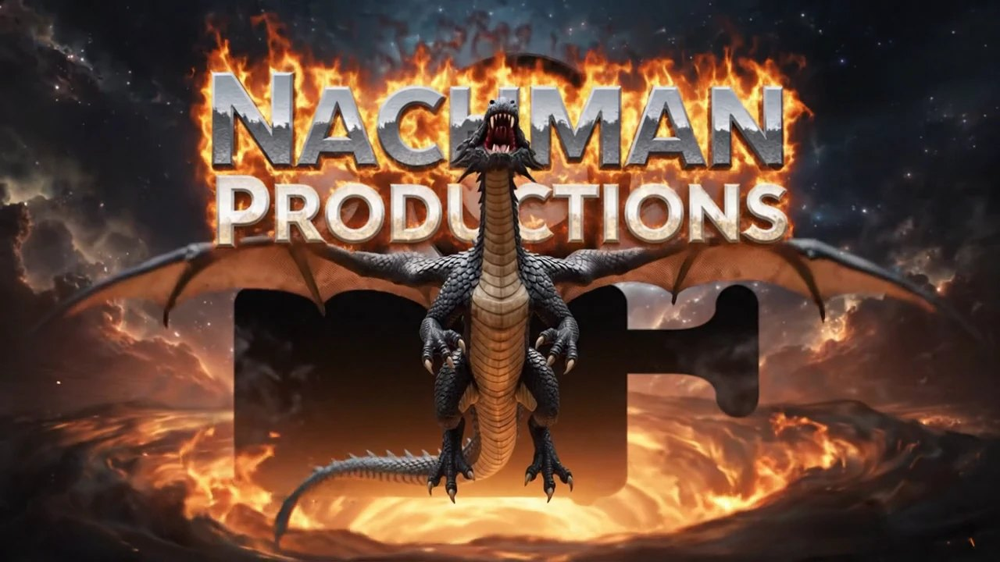
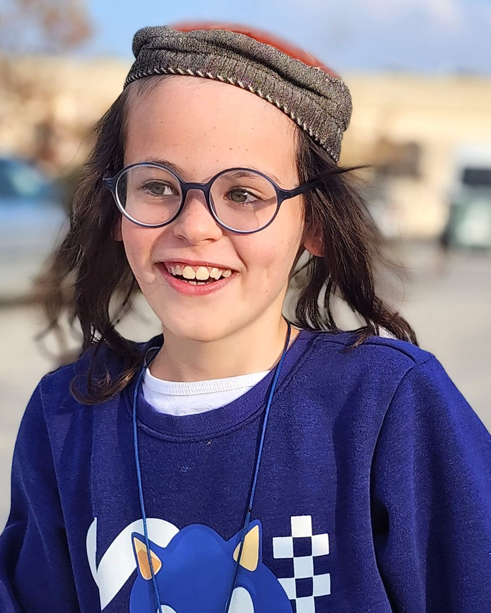

כל מה שצריך כדי לבנות את האתר ב-Wix. ליד כל טקסט יש כפתור העתקה: לוחצים, ומדביקים ב-Wix.
images (רשימה למטה).
#0B0807 רקע
#1D1410 כרטיסים
#F4EDE6 טקסט
#B8AAA0 טקסט משני
#FF8A1F כתום (כפתורים)
#FFCF5A צהוב
#E2410F אדום
כותרות: Heebo Bold (או Rubik Bold). טקסט רגיל: Heebo.

logo.jpg – לוגו לראש האתר ולתחתית
hero.jpg – תמונת רקע לפתיחה
nachman.jpg – לפינת "מי אני"icon-512.png – סמל לכרטיסייה (Favicon, אפשרי ב-Wix רק בחבילה בתשלום)שירותים מי אני סרטונים מחירים איך זה עובד שאלות נפוצות צור קשר
הזמינו עריכה
נחמן הפקות · Nachman Productions
עריכת סרטים מקצועית במחיר שלא תאמינו
כל סוגי הסרטים עד חצי שעה, בעריכה משולבת AI ובאיכות 4K. שולחים חומרים ומקבלים סרט ערוך ומוכן, בלי חבילות מסובכות ובלי הפתעות במחיר.
₪20 לסרטון ובחבילה – עוד יותר זול.
הזמינו עריכה עכשיו חשבו מחיר
כל – סוגי הסרטים עד 30 – דקות לסרט AI – עריכה משולבת בינה מלאכותית ₪20 – לסרטון 4K – איכות אולטרה HD
מה אנחנו עורכים כל סוג של סרט. עד חצי שעה.
לא משנה אם צילמתם בטלפון או במצלמה מקצועית – שולחים חומרים ומקבלים סרט ערוך, מוכן לצפייה ולשיתוף.
🎉 אירועים ושמחות חתונות, בר ובת מצווה, ימי הולדת, בריתות ואירועי משפחה – הופכים שעות של צילומים לסרט מרגש. 📱 רילס, טיקטוק ושורטס סרטונים קצרים וקצביים לרשתות, עם כתוביות, מוזיקה ומעברים שעוצרים את הגלילה. ▶️ סרטוני יוטיוב עריכה מלאה לסרטוני ערוץ: חיתוכים, גרפיקה, כתוביות, מוזיקה ותיקון צבע. 💼 סרטוני תדמית לעסקים סרטון שמציג את העסק שלכם בצורה מקצועית – לאתר, לרשתות ולפרסום. 🖼️ מצגות תמונות ומזכרות תמונות וקטעי וידאו שהופכים לסרט מזכרת עם מוזיקה – למתנה, לאזכרה או לאירוע. ✈️ טיולים וחופשות כל הקטעים מהטלפון מהחופשה הופכים לסרט אחד שכיף לראות שוב ושוב. 🎓 הדרכות והרצאות עריכת שיעורים, הרצאות וסרטוני הסבר – ברור, נקי וקל לצפייה. 🎬 כל סרט אחר יש לכם רעיון אחר? אם הסרט עד חצי שעה – אנחנו עורכים אותו.
תמונה: nachman.jpg בצד, והטקסט לידה.
מי אני היי, אני נחמן פומברג 👋
אני בן 10, הבן של נפתלי ותהילה פומברג, ואני עורך סרטים כבר שנה. בשנה הזאת ערכתי יותר מ-60 סרטים, ולמדתי מכל אחד מהם משהו חדש. אני מאמין שלכל אחד מגיע סרט ערוך ויפה, בלי לשלם על זה הון. בגלל זה המחירים שלי נמוכים במיוחד, אבל ההשקעה בכל סרט היא מלאה. אני עובד עם ארבעה כלי עריכה ביחד, ומשלב בינה מלאכותית בכל עריכה. ככה אני עובד מהר, שומר על איכות של עד 4K, ויכול להציע מחירים שקשה להאמין להם. כל סרט שמגיע אליי מקבל יחס אישי: אני מקשיב למה שאתם רוצים, ועורך אותו כאילו הוא שלי.
+60 – סרטים ערוכים שנה – של ניסיון 4 – כלי עריכה 4K – איכות + AI
בואו נעבוד יחד
ב-Wix: Add ← Video, ולהעלות את "יום הולדת 40 לאמא" מהמחשב (או מיוטיוב, אם יעלה לשם).
סרטונים לדוגמה ככה זה נראה אחרי עריכה יום הולדת 40 לאמא!
איך זה זול ומקצועי בו זמנית? עריכה משולבת AI, באיכות 4K
נחמן משלב כמה כלי עריכה מובילים ביחד ומשתמש בבינה מלאכותית כדי לעבוד מהר ומדויק. ככה המחיר נשאר נמוך והתוצאה נראית מקצועית.
✓ ייצוא באיכות 4K ✓ כתוביות אוטומטיות בעזרת AI ✓ שיפור סאונד ותמונה חכם ✓ אפקטים, טקסטים וגרפיקה
CapCut – עריכה, אפקטים ומעברים Canva – עיצוב, גרפיקה וטקסטים Clipchamp – עריכה וכתוביות Google Vids – סרטונים בעזרת AI 4K – Ultra HD AI – בינה מלאכותית
מחירון מחירים שקופים. בלי אותיות קטנות. כל סרטון עד 30 דקות. ככה שיותר סרטונים, ככה כל סרטון יוצא זול יותר.
סרטון בודד ₪20 לסרטון אחד ✓ סרטון אחד, עד 30 דקות ✓ עריכה מלאה בשילוב AI ✓ איכות עד 4K ✓ מוזיקה, כתוביות ומעברים [כפתור] אני רוצה את זה
חבילת 10 סרטונים ₪180 ₪18 לסרטון · חוסכים ₪20 ✓ 10 סרטונים, כל אחד עד 30 דקות ✓ עריכה מלאה בשילוב AI ✓ איכות עד 4K ✓ מוזיקה, כתוביות ומעברים [כפתור] אני רוצה את זה
הכי משתלם חבילת 20 סרטונים ₪350 ₪17.50 לסרטון · חוסכים ₪50 ✓ 20 סרטונים, כל אחד עד 30 דקות ✓ עריכה מלאה בשילוב AI ✓ איכות עד 4K ✓ מוזיקה, כתוביות ומעברים [כפתור] אני רוצה את זה
🔥 המחירים הכי זולים בשוק 🔥
איך זה עובד 5 צעדים לסרט מוכן
1. בוחרים חבילה סרטון בודד או חבילה, ממלאים טופס קצר עם שם ומייל ומספרים על הסרטונים. 2. שולחים חומרים נחמן חוזר אליכם במייל, ואתם משיבים עם הסרטונים, התמונות והמוזיקה (לקבצים גדולים: Google Drive או WeTransfer). 3. עורכים בשבילכם נחמן עורך את הסרט: חיתוכים, מעברים, מוזיקה, כתוביות וצבע. 4. משלמים משלמים לנחמן לפי החבילה שבחרתם – בדיוק המחיר שבמחירון, בלי תוספות. 5. מקבלים סרט מוכן מקבלים קובץ מוכן לצפייה ולשיתוף, באיכות עד 4K.
ב-Wix: Add ← Interactive ← FAQ (או "Accordion").
שאלות נפוצות יש שאלות? יש תשובות
כמה זה עולה? סרטון בודד עולה ₪20. חבילת 10 סרטונים עולה ₪180, וחבילת 20 סרטונים עולה ₪350 בלבד. החבילות מתאימות במיוחד לעסקים ולמי שמעלה תוכן לרשתות באופן קבוע. אילו סרטים אפשר לערוך? כל סוגי הסרטים – אירועים, רשתות חברתיות, יוטיוב, עסקים, מזכרות ועוד – באורך של עד 30 דקות לסרטון. הסרט שלי ארוך מחצי שעה, מה עושים? צרו קשר ונבדוק יחד – אפשר לחלק לכמה סרטים או למצוא פתרון אחר. איך שולחים את החומרים? אחרי שממלאים את הטופס נחמן חוזר אליכם במייל, ופשוט משיבים עליו עם החומרים. לקבצים גדולים הכי נוח קישור הורדה – Google Drive, WeTransfer או כל שירות שיתוף קבצים אחר. באיזו איכות אקבל את הסרט? עד 4K (אולטרה HD), בהתאם לאיכות החומרים שתשלחו. אפשר לבקש גם קובץ קל יותר לשיתוף ברשתות. באילו כלים נחמן עובד? נחמן משלב כמה כלים ביחד: CapCut, Canva, Clipchamp ו-Google Vids, יחד עם כלי בינה מלאכותית שמזרזים את העבודה ומשפרים את התוצאה. כמה זמן לוקח לקבל את הסרט? תלוי באורך הסרט ובכמות החומרים. כשתשלחו פרטים תקבלו הערכת זמן מדויקת.
בואו נתחיל מוכנים לסרט שלכם? משאירים שם ומייל, ומיד מקבלים מייל עם הסבר איך לשלוח את החומרים לסרט.
לפנייה ישירה בוואצאפ לחצו כאן
https://katzr.net/a60665
naftalinahar@gmail.com
שם מלא (חובה) אימייל (חובה) סוג הסרט (רשימה): אירועים ושמחות / רילס, טיקטוק ושורטס / סרטוני יוטיוב / סרטוני תדמית לעסקים / מצגות תמונות ומזכרות / טיולים וחופשות / הדרכות והרצאות / כל סרט אחר חבילה (רשימה): סרטון בודד – ₪20 / חבילת 10 סרטונים – ₪180 / חבילת 20 סרטונים – ₪350 ספרו לנו על הסרט (טקסט ארוך) [כפתור] שליחה
תודה! הפנייה התקבלה. שלחנו לכם מייל עם הסבר איך לשלוח את החומרים (בדקו גם בספאם).
ב-Wix: בהגדרות הטופס ← Automations (או "Submit Settings") ← Send a confirmation email to the visitor.
תודה שפניתם לנחמן הפקות
שלום! 👋 תודה שפניתם לנחמן הפקות! כדי שנוכל להתחיל לערוך, שלחו לנו את החומרים לסרט למייל naftalinahar@gmail.com: • סרטונים ותמונות (לקבצים גדולים: קישור Google Drive או WeTransfer) • מוזיקה, אם יש שיר מסוים שאתם רוצים • טקסטים, כתוביות או שמות שצריכים להופיע • כל הערה על הסגנון שאתם רוצים ספרו לנו גם מה הייתם רוצים שיהיה בסרט – ככל שנדע יותר, הסרט ייצא מדויק יותר. תודה רבה שבחרתם בנו! נחמן נחמן הפקות 🎬
עריכת סרטים לכל מטרה, עד חצי שעה, במחיר הכי זול שיש.
📞 058-448-8148 naftalinahar@gmail.com לפנייה ישירה בוואצאפ לחצו כאן
© 2026 נחמן הפקות · Nachman Productions